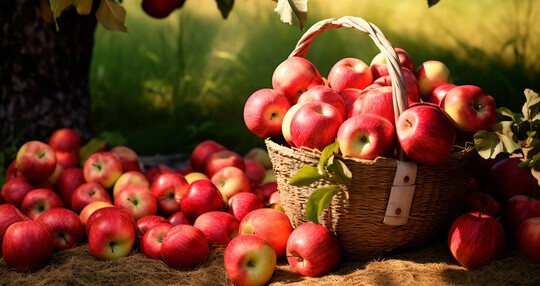

Welcome to Fresh Fruit Haven, where our passion for fresh, delicious fruit meets exceptional service. Founded in 2008, we set out with a simple mission: to bring the highest quality fruits from around the world straight to your doorstep. Our journey began with a love for fruit and a desire to provide a better way for people to enjoy nature’s sweetest offerings. What started as a small local operation has grown into a trusted online destination for fruit enthusiasts everywhere.
At Fresh Fruit Haven, our mission is to offer a diverse selection of premium fruits while delivering an unparalleled shopping experience. We believe in the power of fresh produce to enhance your health and happiness, and we’re committed to ensuring that every bite you take is nothing short of exceptional
We source our fruits from the best farms and growers globally, ensuring that only the freshest, tastiest produce makes it to your table.We are dedicated to environmentally friendly practices, from sustainable farming methods to eco-friendly packaging. We strive to reduce our carbon footprint and support practices that protect our planet. Your satisfaction is our top priority. We are committed to providing excellent customer service and ensuring that your experience with us is smooth and enjoyable. We continuously seek out new varieties and flavors to offer you a dynamic and exciting fruit selection. Our goal is to keep you discovering and enjoying the best fruits available.
Since our inception, we have proudly hosted over [Number] events, including fruit tasting festivals, educational workshops on sustainable farming, and community outreach programs. These events are a testament to our commitment to engaging with our community and sharing our passion for fruit. Our annual The Big Apple Event has become a highlight for fruit lovers, offering a unique opportunity to sample new varieties, learn from experts, and connect with fellow enthusiasts.
We are more than just a fruit supplier; we are your partners in enjoying a healthier, more flavorful life. Our commitment to quality, sustainability, and customer satisfaction drives everything we do, and we’re excited to continue sharing our love of fruit with you. Thank you for choosing [Your Company Name]. We look forward to serving you!